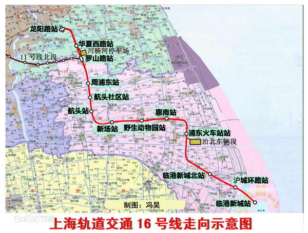
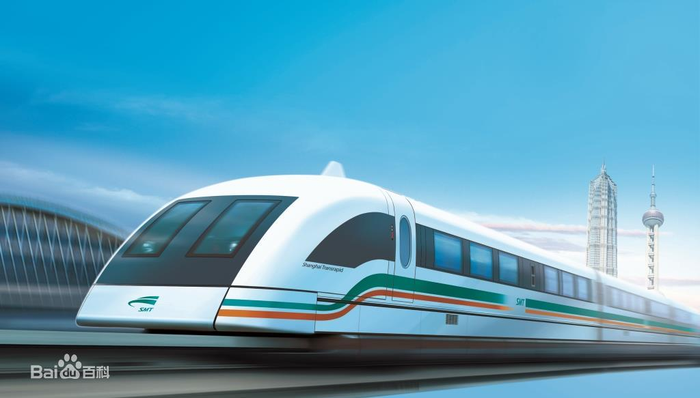
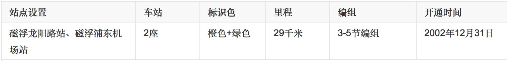
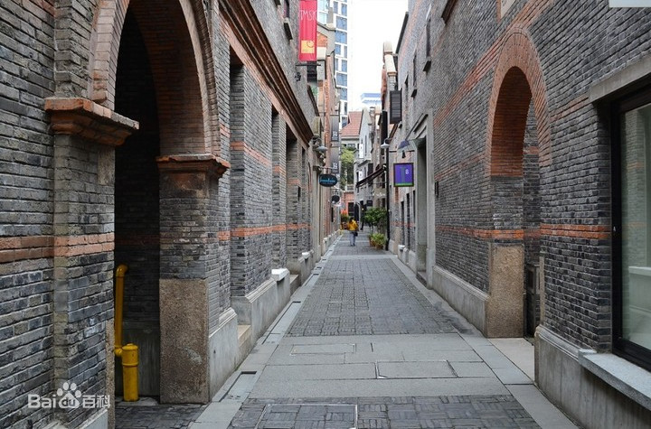
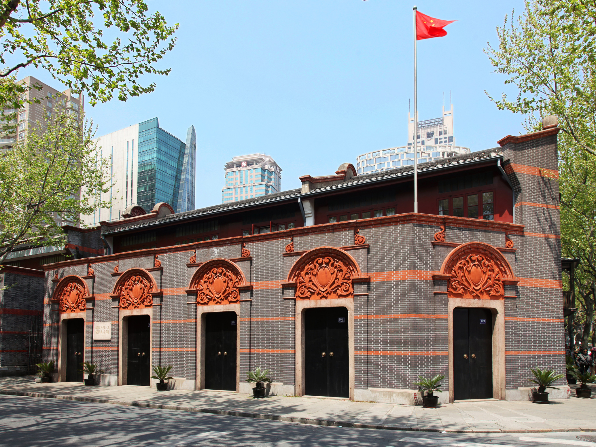
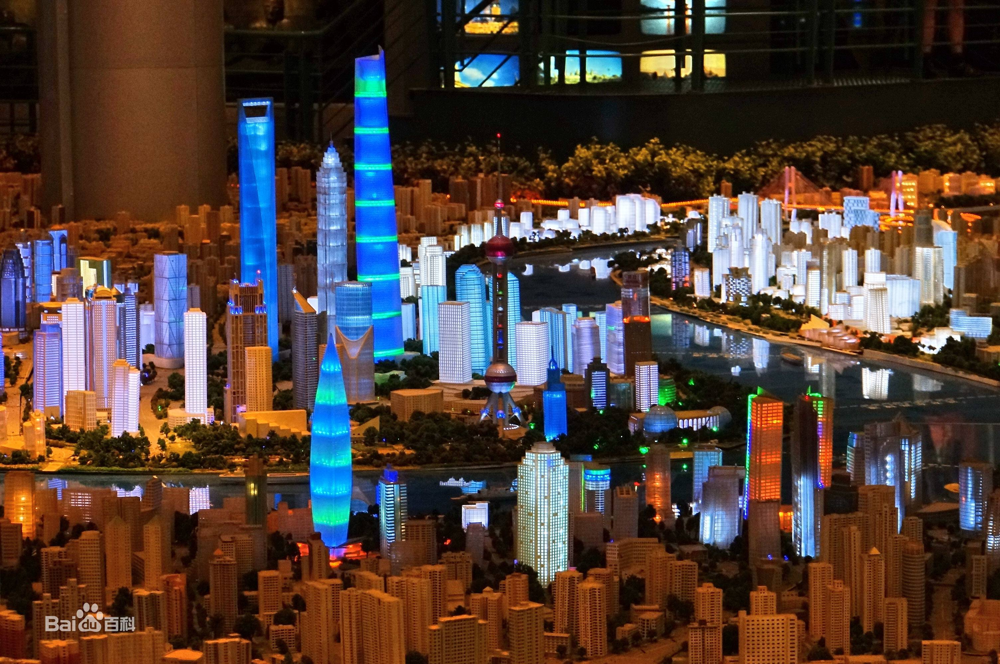

夏令营 - 印象上海一日游
目的：
通过实践考察以研学的方式学习和了解上海的建筑特色、
历史文化、科技发展等方面的知识。
行程安排：
- 8:00 滴水湖地铁站集合，了解滴水湖发展史
- 9:30 龙阳路：参观磁悬浮科技馆，乘坐磁悬浮列车(龙阳路-浦东机场)
- 11:00 龙阳路午餐
- 13:00 新天地：石库门（建筑文化），一大会址（红色教育）
- 15:00 人民广场：城市规划馆，了解上海全貌
- 17:00 外滩：上海外滩建筑群（建筑文化）
- 19:00 龙阳路晚餐，返程
滴水湖
位置境域
滴水湖位于上海市最东南端、杭州湾与长江口交汇处东海之滨的南汇新城，距上海市中心约75公里、南离洋山深水港约32公里、北距浦东国际机场约25公里。 滴水湖呈圆形，直径为2500米，总面积为556万平方米。滴水湖平均水深3.7米，最深处6.2米，处于常水位+2.7米时，湖心区水容量约为1620万立方米。滴水湖是在滩涂上开挖出来的，开挖土方1780万方。
2009年8月被评为第九批国家水利风景区。
名称由来
滴水湖设计构思来源于最初对南汇新城的总体规划方案：一滴来自天上的水滴，落入大海，泛起层层涟漪，水滴落入处形成湖面。
水文特征
滴水湖水源为黄浦江支流——大治河，通过一条引清河道，直接将大治河的河水引入湖中。滴水湖水利配套工程包括春涟河、夏涟河、秋涟河三条链状河道以及赤风港、橙和港、黄日港、绿丽港、青祥港、蓝云港、紫飞港七条射状河道。
地铁16号线

上海地铁16号线西北起自浦东新区龙阳路站，东南至浦东新区滴水湖站，线路全程位于上海市浦东新区境内，北连浦东中心区域，南接南汇新城，串联周浦、康桥、航头、新场以及惠南城区。2013年12月29日开通运营一期工程（罗山路站至滴水湖站），2014年12月28日开通运营延伸段（龙阳路站至罗山路站），标志色为水绿色。
上海地铁16号线全长59.334千米，是一条在郊区以高架为主的地铁线路。其中地下线长约6.734千米，高架线长52.6千米；共设车站13座，其中地下车站3座，高架车站10座；列车采用3节/6节编组A型列车；由上海磁浮交通发展有限公司运营管理。
磁悬浮列车
上海磁浮列车

2006年4月27日，其首条线路上海磁浮列车示范运营线开通运营，也是中国首条磁浮线路。上海磁浮列车共开通1条线路，线路总长30千米，单程行驶8分钟，共计2座车站。 
石库门

石库门是上海最有代表性的民居建筑，通常被认为是上海近代都市文明的象征之一。
石库门的由来
上海的旧弄堂一般是石库门建筑，它起源于太平天国起义时期，当时的战乱迫使江浙一带的富商、地主、官绅纷纷举家拥入租界寻求庇护，外国的房产商乘机大量修建住宅。上个世纪二三十年代，围合仍是上海住宅的主要特征，但不再讲究雕刻，而是追求简约，多进改为单进，中西合璧的石库门住宅应运而生。这种建筑大量的吸收了江南地区民居的式样，以石头做门框，以乌漆实心厚木做门扇，这种建筑因此得名“石库门”。
汉语中把围束的圈叫做“箍”，如“金箍棒”，“箍桶”“袖箍”（即袖标）。这种用石条围束门的建筑被叫做“石箍门”，宁波人发“箍”字音发的是“库”，以后上海的“石箍门”就讹作“石库门”了。 石库门建筑的平面和空间更接近于江南传统的二层楼的三合院或四合院形式，保持着正当规整的客堂，有楼上安静的内室，还有习惯中常见的两厢。这种建筑还基本保持了中国传统住宅对外较为封闭的特征，虽身居闹市，但关起门来却可以自成一统。于是，这“门”也就变得愈加重要起来。它总是有一圈石头的门框，门扇为乌漆实心厚木，上有铜环一副。这种式样的建筑被上海人称为“石库门”。
上海中共一大会址纪念馆

这是一幢建于一九二零年的具有上海地方风格的石库门楼房，是当时出席大会的上海代表李汉俊和他哥哥的寓所。1921年7月23日，中国共产党第一次全国代表大会，就在楼下一间十八平方米的客厅内召开。出席这次大会的有毛泽东、何叔衡、董必武、陈潭秋、王尽美、邓恩铭、李达、李汉俊、张国焘、刘仁静、陈公博、周佛海及陈独秀指派的代表包惠僧共13名代表。会议被一个法国巡捕房密探察觉，代表们立即撤离现场，到浙江嘉兴南湖的一条游船上继续举行。
大会通过了党纲和决议，选举了由陈独秀、李达、张国焘三人组成的中央局，宣告了中国共产党的成立。
影片《建党伟业》

上海城市规划展示馆

上海外滩万国建筑博览群
上海市区黄浦江滨外滩一带，遍布着一幢幢不同国家风格的西式建筑群，故有“世界建筑博览会”之称。
上海外滩建筑群包括：
- 古典主义风格的亚细亚大楼（1915年），
- 英国古典式的上海总会大楼（1911年）、
- 欧洲古典折中主义的海关大楼（1925年），
- 仿意大利文艺复兴风格的汇中饭店大楼（1906年），
- 装饰上采用中国传统建筑风格的中国银行大楼（1937年），
- 百老汇大厦（1934年）
建筑风情
1843年根据《南京条约》（第一次鸦片战争历史背景）的规定上海正式开埠，当殖民者们踏上上海这块陌生的土地时，就看中了黄浦江的这片江滩。于是这条曾经是船夫与苦工踏出来的纤道。经过百余年的建设,高楼林立、车水马龙。这些古典主义与现代主义并存的建筑，已成为了上海的象征。
外滩的精华就在于这些被称为“万国建筑博览”的外滩建筑群。北起苏州河口的外白渡桥，南至金陵东路，全长约1500米。著名的中国银行大楼、和平饭店、海关大楼、汇丰银行大楼再现了昔日“远东华尔街”的风采，这些建筑虽不是出自同一位设计师，也并非建于同一时期，然而它们的建筑色调却基本统一，整体轮廓线处理惊人的协调。无论是极目远眺或是徜徉其间，都能感受到一种刚健、雄浑、雍容，华贵的气势。